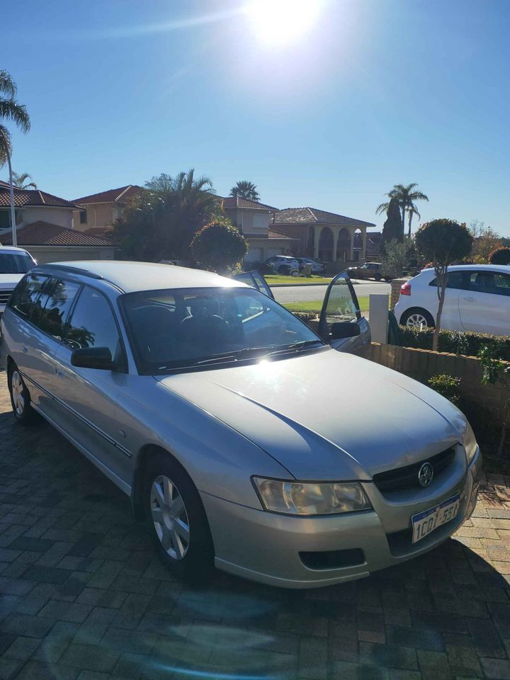

We're not just in the business of providing quality spare parts at a reasonable price, we're also in the business of reducing automotive waste to benefit the environment. Up to 82% of a regular vehicle can be recycled rather than sitting in landfill. By reusing parts, we're also minimising the number of new parts that need to be manufactured each year, again reducing emissions and excess waste. We carefully remove all hazardous fluids for responsible disposal, the viable car parts are reused and the bodies recycled for use in metal production.
Environmentally responsible recycling More than 90% of used car parts are reused every year.
The good news is, a lot of the common issues involved in car recycling can be overcome. This means that there's no excuse not to take advantage of your local GRS. However, there are some reasons why this might not be possible in your area. You could find that: • You haven't lived in your area for a while and therefore no longer have the appropriate facilities, staff, infrastructure or contract provider. • You're in a rural area and can't access to the services available to those in a town. • You don't own a garage, so you'd have to pay a local collector to take the car off your hands. If none of the above apply, here's how you can take advantage of your local GRS: Open days There's no better place to take your old car for a spin than a GRS event open day.
- Plastic materials used in car parts such as bumpers can contain toxic substances such as heavy metals, preservatives, and petrol additives. They also contain microplastics which are potentially harmful to marine life and human health. - While every effort is made to keep cars and spare parts safe, a standard paint job and the excessive use of grease can expose parts to potential corrosion, affecting their lifespan. - Some brands use materials in car parts which can be harmful to workers, the environment, and their own families. These materials are very unlikely to be recycled, and sometimes are banned entirely. - If you have a truck, you can drive to a local recycling centre and take your vehicle.

Every car parts bin (we call them waste bins) has a unique identifier so we can identify and trace them to a specific vehicle. We know which cars have been collected, how many times they have been collected and what type of part is stored in each bin. We then allow our customers to collect the bins free of charge, return it to the nearest depot, and arrange for it to be collected by our waste collectors. A range of collection and processing options are available to our customers depending on the material collected. If your car is in the East Midlands and you would like a free car parts bin to dispose of waste from your vehicle, please e-mail us at partlocators@play-r.com.
Holden's fleet recycles about 15% of the waste it generates, we have won awards for being eco-friendly in the past and are currently working towards even more awards for sustainability. Each Holden vehicle, whether owned by you or the dealership, can be recycled with the factory fully-trained to do so. Your vehicle's environment is our environmental responsibility. The world's population consumes around 500 million new cars each year, how many new cars are we supplying to the entire planet? We could definitely be saving some trees! We don't just recycle used cars, we recycle used materials too.
Address:103 Sheffield Rd, Welshpool WA 6106
Phone: (08) 9358 1392